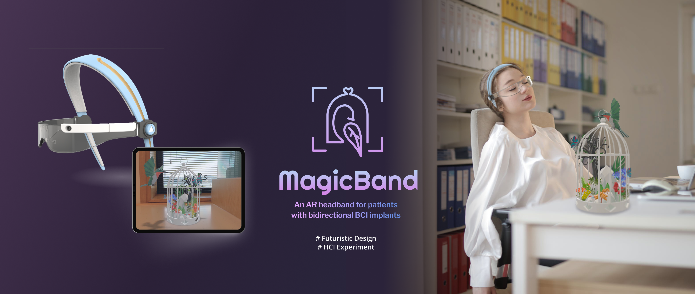
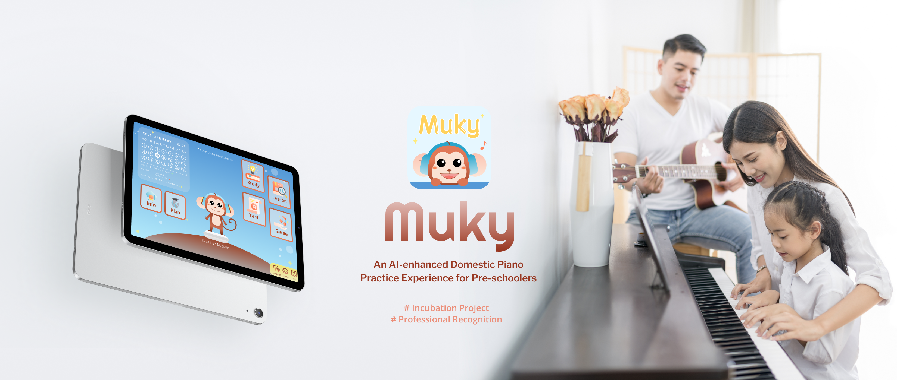
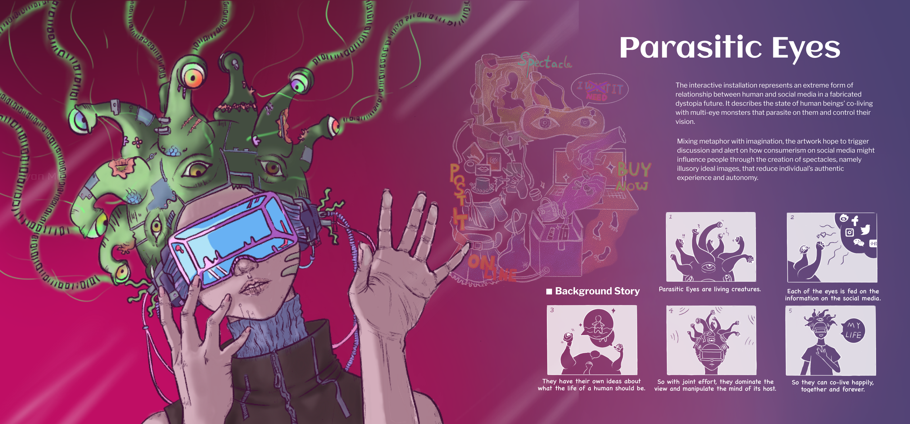
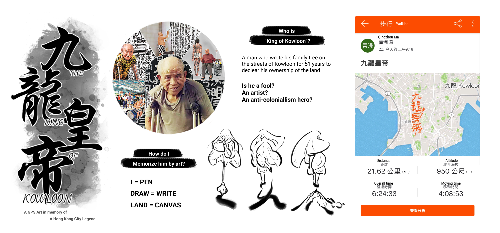
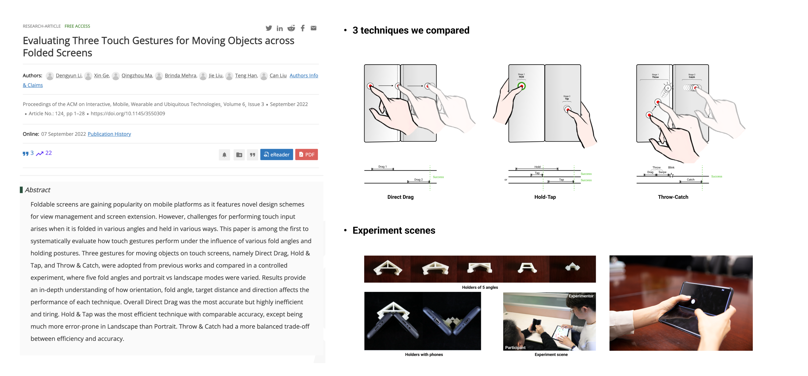
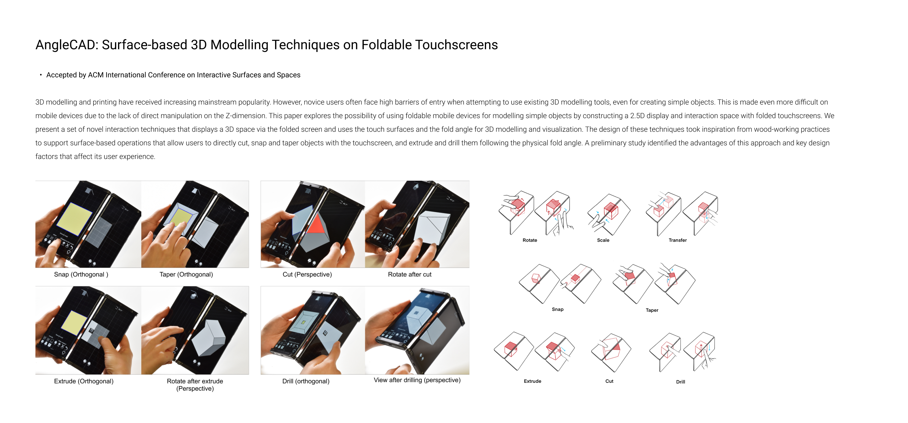
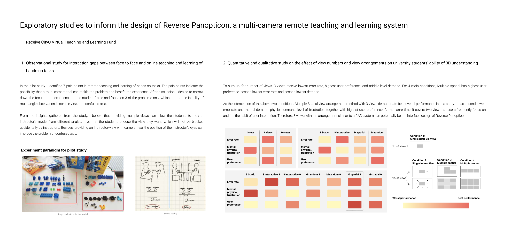

Project1: An AR headband for patients with bidirectional BCI implants
With the development of Brain-Computer Interface (BCI) in the medical field, invasive BCI is going to be a common treatment for a million people in treating serious emotion/motor function diseases. However, the mental care needs of patients after the implantation surgery are neglected and become the main reason hindering their social adjustment. After user research, I found that “uncontrollable anxiety” and “life difficulties” are two major pain points of patients. Therefore, I designed a headband with Augmented Reality(AR) that ease life difficulties such as crashing and charging. Patients will be reminded to take soothing activities in AR if a high anxiety level is detected.
Result
1. User testing showed a general acceptance and positive attitude from the users.
2. 89% of participants' GSR signals demonstrate a decreasing trend, indicating the effect of the therapy in reducing anxiety.
3. 78% of the participants have a lower score on the State-Trait Anxiety Inventory after the therapy, which indicates a lower anxiety level.

Project2: An AI-enhanced Domestic Piano Practice Experience for Pre-schoolers
Overview and result: Muky is an online Pre-school Music Education (PME) platform that guides domestic piano practice for children and parents. By using projection on keyboard and AI sound recognition, parents can help their children practice better at home. The project participated in HK Tech 300 Incubation project and was highly regarded by the judges; It was examined by professionals in the field of music education and received positive feedback; Users that were invited in the tests commented that the system meets their needs and is the proper way to solve their problems. Methods adopted: Qualitative & quantitative user research; User testing; Market & competitor analysis; UI animation; Literature review; Persona;
Project3: A website design for a chocolate brand's retargeting younger customers

Project1: A monster-like wearable installation reflecting consumerism on social mediaProject2: A wooden installation as a reflection of human's relationship with natural disasters

Project3: A GPS art in memory of a Hong Kong's controversial city legend

Project1: Evaluating three touch gestures for moving objects across folded screens

Project2: FingerCad

Project3: Exploratory studies to inform the design of a multi-camera remote teaching and learning system